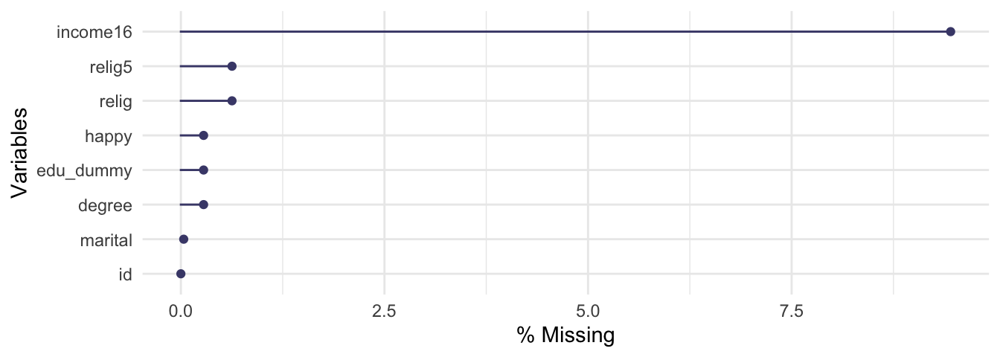

# Import a csv file
library(readr)
my_data <- read_csv("path_to_the_file/data.csv")4 Prepare categorical variables
Welcome to the data preparation tutorial of the Practice R book (Treischl 2023). Practice R is a text book for the social sciences which provides several tutorials supporting students to learn R. Feel free to inspect the tutorials even if you are not familiar with the book, but keep in mind these tutorials are supposed to complement the Practice R book. 
Chapter 5 was dedicated to support you to prepare data. We learned how to import, clean, and combine data. In addition, we got in touch with the naniar package which offers many functions to inspect missing values (Tierney et al. 2021); and I introduced the forcats package to prepare categorical variables for the analysis (Wickham 2022).
What preparation steps you need to apply is dependent on the data at hand and the analysis intended, which is why Chapter 5 provided a detailed overview of what happens under the hood when we import data. Keep in mind that RStudio has many cool features (e.g., data preview) to import data and packages such as readr helps us with this task:
Since I have no idea what your data looks, this tutorial will not focus on how to import and clean data. Instead, let’s focus systematically on the forcats package. Suppose we started to analyze whether participant’s income has an effect on their happiness, but we need to control for participant’s educational background, religious beliefs, and if other categorical variables affect our estimation results. I already introduced several functions of the forcats package, but this tutorial systematically focuses on the main tasks of the package, as is outlined in its cheat sheet (click on the hex sticker to download the cheat sheet from the website).
Thus, we repeat and systematize our forcats skills: (1) We inspect factors; (2) change the order of levels; (3) change the value of levels; (4) and we add or drop levels. For this purpose, we use the gss2016 data and I assigned a smaller subset as df with several categorical variables.
# Packages for Tutorial Nr. 5
library(naniar)
library(dplyr)
library(tidyr)
library(forcats)
library(PracticeR)
# The gss2016 data
df <- PracticeR::gss2016 |>
select(id, degree, relig, income16, happy, marital)
head(df)#> # A tibble: 6 × 6
#> id degree relig income16 happy marital
#> <dbl> <fct> <fct> <fct> <fct> <fct>
#> 1 1 Bachelor None $170000 or over Pretty Happy Married
#> 2 2 High School None $50000 to 59999 Pretty Happy Never Married
#> 3 3 Bachelor Catholic $75000 to $89999 Very Happy Married
#> 4 4 High School Catholic $170000 or over Pretty Happy Married
#> 5 5 Graduate None $170000 or over Very Happy Married
#> 6 6 Junior College None $60000 to 74999 Very Happy MarriedFinally, we transform and combine data once more given that such steps are often necessary before we can start to prepare data. However, this time we examine how built-in data sets from the tidyr and the dplyr package make the first move a bit easier.
4.1 Inspect factors
Suppose we need to prepare several categorical variables, such as religion (relig) or marital status (marital), for an analysis. To inspect factors, count them with fct_count().
# Count factor variable
fct_count(df$marital)#> # A tibble: 6 × 2
#> f n
#> <fct> <int>
#> 1 Married 1212
#> 2 Widowed 251
#> 3 Divorced 495
#> 4 Separated 102
#> 5 Never Married 806
#> 6 <NA> 1Or examine the unique levels of a variable with the fct_unique() function:
# How many unique levels do we observe
fct_unique(df$marital)#> [1] Married Widowed Divorced Separated Never Married
#> [6] <NA>
#> Levels: Married Widowed Divorced Separated Never Married4.2 Change the order of levels
The variable religion (relig) has 13 different levels. Let’s assume we want to control for the largest religious groups only in the analysis. Use the fct_infreq() function to identify how often each level appears.
# fct_infreq: Reorder factor levels by frequency
f <- fct_infreq(df$relig)
fct_count(f)#> # A tibble: 14 × 2
#> f n
#> <fct> <int>
#> 1 Protestant 1371
#> 2 Catholic 649
#> 3 None 619
#> 4 Jewish 51
#> 5 Other 44
#> 6 Christian 40
#> 7 Buddhism 21
#> 8 Moslem/Islam 19
#> 9 Hinduism 13
#> 10 Orthodox-Christian 7
#> 11 Inter-Nondenominational 7
#> 12 Other Eastern 4
#> 13 Native American 4
#> 14 <NA> 18The fct_infreq() sorts them in order of their frequency, but note we can also order the levels by first appearance (fct_inorder) or in a numeric order (fct_inseq). As the next console illustrates, R sorts levels alphabetically, which is clearly not always a desirable default behavior. Use the fct_inorder() to sort them by appearance.
# Example factor
f <- factor(c("b", "a", "c"))
levels(f)#> [1] "a" "b" "c"# fct_inorder: Reorder factor levels by first appearance
fct_inorder(f)#> [1] b a c
#> Levels: b a cCan you still remember how to manually relevel? Use the fct_relevel() and sort the level Never Married at the second position. You can provide a vector with level names or use the after option to change the position of the level.
# Relevel manually
# f <- fct_relevel(df$marital, c("Married", "Never Married"))
f <- fct_relevel(df$marital, "Never Married", after = 1)
fct_count(f)#> # A tibble: 6 × 2
#> f n
#> <fct> <int>
#> 1 Married 1212
#> 2 Never Married 806
#> 3 Widowed 251
#> 4 Divorced 495
#> 5 Separated 102
#> 6 <NA> 1Sometimes we need to turn the order around. Reverse the order of the levels with fct_rev().
# fct_rev: Reverse order of factor levels
f <- fct_rev(df$marital)
fct_count(f)#> # A tibble: 6 × 2
#> f n
#> <fct> <int>
#> 1 Never Married 806
#> 2 Separated 102
#> 3 Divorced 495
#> 4 Widowed 251
#> 5 Married 1212
#> 6 <NA> 14.3 Change the value of levels
The relig variable has many levels and even has a category named other, since there are so many religious groups. The same logic applies the fct_other() function which collapses all levels but the one we actually need. Create a variable that includes the five largest groups only. Use the fct_other() function and tell R which variables to keep.
# Create a variable with the five largest, rest are others
df$relig5 <- fct_other(df$relig,
keep = c("Protestant", "Catholic", "None", "Jewish")
)
fct_count(df$relig5)#> # A tibble: 6 × 2
#> f n
#> <fct> <int>
#> 1 Protestant 1371
#> 2 Catholic 649
#> 3 Jewish 51
#> 4 None 619
#> 5 Other 159
#> 6 <NA> 18The fct_other() function includes in the code the used levels. If we are unconcerned about this information, you can use one of the fct_lump() functions. The function picks between different methods to lump together factor levels. Nowadays the authors recommend to use one of the specific fct_lump_* functions (fct_lump_min, fct_lump_prop, fct_lump_lowfreq) as outlined in the help file. In our case, use the fct_lump_n() function to lump together the most frequent (n) ones.
# Lump uncommon factor together levels into "other"
f <- fct_lump_n(df$relig, n = 5, other_level = "Further groups")
fct_count(f)#> # A tibble: 7 × 2
#> f n
#> <fct> <int>
#> 1 Protestant 1371
#> 2 Catholic 649
#> 3 Jewish 51
#> 4 None 619
#> 5 Other 44
#> 6 Further groups 115
#> 7 <NA> 18Next, we are going to prepare the educational background. The variable degree includes several levels, as the console shows.
# Count degrees
fct_count(df$degree)#> # A tibble: 6 × 2
#> f n
#> <fct> <int>
#> 1 Lt High School 328
#> 2 High School 1461
#> 3 Junior College 216
#> 4 Bachelor 536
#> 5 Graduate 318
#> 6 <NA> 8We already used the fct_recode() function to change factor levels by hand. The lowest category of degree is called less than high school but the text label is confusing. Recode the variable, insert the new label in back ticks to replace the old label (Lt High School).
# fct_recode: Change factor levels by hand
f <- fct_recode(df$degree, `Less than high school` = "Lt High School")
fct_count(f)#> # A tibble: 6 × 2
#> f n
#> <fct> <int>
#> 1 Less than high school 328
#> 2 High School 1461
#> 3 Junior College 216
#> 4 Bachelor 536
#> 5 Graduate 318
#> 6 <NA> 8Suppose we want to control only if participants have a high educational background. Use the fct_collapse() function to create a binary dummy variable. The variable should indicate if a person’s educational background is low (Lt High School; High School, and Junior College) or high (Bachelor and Graduate).
# Collapse factor variable
df$edu_dummy <- fct_collapse(df$degree,
low = c(
"Lt High School",
"High School",
"Junior College"
),
high = c("Bachelor", "Graduate")
)
fct_count(df$edu_dummy)#> # A tibble: 3 × 2
#> f n
#> <fct> <int>
#> 1 low 2005
#> 2 high 854
#> 3 <NA> 84.4 Add or drop levels
As always, the forcats package has more to offer than I can outline. For example, suppose we observed the following religion variable.
# New religion variable
religion <- factor(
x = c("Protestant", "Jewish", NA, NA),
levels = c("Protestant", "Jewish", "Catholic")
)
religion#> [1] Protestant Jewish <NA> <NA>
#> Levels: Protestant Jewish CatholicDid you notice that the variable has a level for Catholic even though we do not observe it. The fct_expand() can be used to expand levels, while the fct_drop() function helps us to get rid of unused levels.
# Drop unused levels
fct_drop(religion)#> [1] Protestant Jewish <NA> <NA>
#> Levels: Protestant JewishFurthermore, I included missing values on purpose and the latter may have an impact on our analysis. We can make them explicit and include them as a level with fct_na_value_to_level().
# Make NAs explicit
fct_na_value_to_level(religion, level = "Missing")#> [1] Protestant Jewish Missing Missing
#> Levels: Protestant Jewish Catholic Missing4.5 Further steps
Chapter 5 discussed many steps to prepare data, but of course this was not an all-encompassing list. I introduced data formats and we learned how to combine data given that many official data sets are split into several files. Unfortunately, transforming and combining data can be tricky and we may introduce mistakes if we neglected to prepare and clean the data properly. Thus, it is up to you to assure that the data can be transformed (combined) and further cleaning steps might be necessary.
Instead of re-running these steps with the gss2016 data, let us explore how the tidyr package can help with the task (Wickham and Girlich 2022). As other packages, tidyr has a cheat sheet and provides a tiny data set that lets us repeat how the functions work. For example, the table4a data is a wide data set with observations of three countries and two years.
# Example wide table
head(table4a)#> # A tibble: 3 × 3
#> country `1999` `2000`
#> <chr> <dbl> <dbl>
#> 1 Afghanistan 745 2666
#> 2 Brazil 37737 80488
#> 3 China 212258 213766Use the pivot_longer() function to transform the data. The long data should have a new variable for the year (via names_to) and you can give the values (values_to) to a variable named cases.
# Make em longer
pivot_longer(table4a,
cols = 2:3, names_to = "year",
values_to = "cases"
)#> # A tibble: 6 × 3
#> country year cases
#> <chr> <chr> <dbl>
#> 1 Afghanistan 1999 745
#> 2 Afghanistan 2000 2666
#> 3 Brazil 1999 37737
#> 4 Brazil 2000 80488
#> 5 China 1999 212258
#> 6 China 2000 213766Or consider the table2 data, the variable type has two outcome types (cases and population) which underline why we should transform the data into the wide format.
# Example long table
head(table2)#> # A tibble: 6 × 4
#> country year type count
#> <chr> <dbl> <chr> <dbl>
#> 1 Afghanistan 1999 cases 745
#> 2 Afghanistan 1999 population 19987071
#> 3 Afghanistan 2000 cases 2666
#> 4 Afghanistan 2000 population 20595360
#> 5 Brazil 1999 cases 37737
#> 6 Brazil 1999 population 172006362Keep in mind that we need to provide where the names (names_from) and the values (values_from) are coming from to transform the data.
# Make it wider
pivot_wider(table2,
names_from = type,
values_from = count
)#> # A tibble: 6 × 4
#> country year cases population
#> <chr> <dbl> <dbl> <dbl>
#> 1 Afghanistan 1999 745 19987071
#> 2 Afghanistan 2000 2666 20595360
#> 3 Brazil 1999 37737 172006362
#> 4 Brazil 2000 80488 174504898
#> 5 China 1999 212258 1272915272
#> 6 China 2000 213766 1280428583
I introduced these data sets because tidyr offers such simple examples in the cheat sheet that demonstrates how we can transform data. In addition, the copycat package has the code snippets from the tidyverse cheat sheets included. As the animation shows, it only takes a few seconds to insert these examples via the add-in. Start with such a simple example if you do not transform and combine data on a regular basis. After you made sure that the code works, adjust it for your purpose, but be careful how the data is transformed.

The same applies if you need to combine data. The dplyr also offers a small data set to practice mutating joins (Wickham et al. 2022). The band_members data includes names from members of two different music bands; and the band_instruments data includes their instruments.
# Small data to recapture the join_* functions
band_members#> # A tibble: 3 × 2
#> name band
#> <chr> <chr>
#> 1 Mick Stones
#> 2 John Beatles
#> 3 Paul Beatlesband_instruments#> # A tibble: 3 × 2
#> name plays
#> <chr> <chr>
#> 1 John guitar
#> 2 Paul bass
#> 3 Keith guitarUse one of the join function (e.g., inner_join, full_join) to combine the data.
# Mutating joins
band_members |> inner_join(band_instruments, by = "name")#> # A tibble: 2 × 3
#> name band plays
#> <chr> <chr> <chr>
#> 1 John Beatles guitar
#> 2 Paul Beatles bassband_members |> full_join(band_instruments, by = "name")#> # A tibble: 4 × 3
#> name band plays
#> <chr> <chr> <chr>
#> 1 Mick Stones <NA>
#> 2 John Beatles guitar
#> 3 Paul Beatles bass
#> 4 Keith <NA> guitar# Further joins:
# band_members |> left_join(band_instruments)
# band_members |> right_join(band_instruments)
Finally, one last word about missing values: make sure you explore the data before you run an analysis, but don’t neglect to inspect missing and implausible values as well. The naniar package has a lot to offer for this task and of course I did not introduce everything it is capable of in Chapter 5. For example, we used the vis_miss() function to visualize missing values, but not the amount of missing values. Give the gg_miss_var() function a try. It returns a lollipop chart to visualize the amount of missing values. To display percentages, set the show_pct option to TRUE.
# Visualize the amount of missing values
library(naniar)
gg_miss_var(df, show_pct = TRUE)
4.6 Summary
In addition to the discussed content, keep the following R functions and packages in mind:
Import data with different packages. For example:
- CSV with the
readrpackage (Wickham, Hester, and Bryan 2022) - Excel with the
readxlpackage (Wickham and Bryan 2022) - SPSS or Stata with the
havenpackage (Wickham, Miller, and Smith 2022)
- CSV with the
Convert objects into numeric (character) vectors (
as.numeric, as.character)Rename columns (
dplyr::rename)Cleans names of an object (
janitor::clean_names: Firke 2021)Combine data:
- Pivot data from long to wide (
tidyr::pivot_wider) - Pivot data from wide to long (
tidyr::pivot_longer) - Mutating joins (
dplyr::inner_join, left_join, right_join, full_join) - Filtering joins (
dplyr::semi_join, anti_join) - Set pperations (
base::union, intersect, setdiff, setequal)
- Pivot data from long to wide (
Missing (and implausible) values:
- The
naniarpackage and its function to explore missing values (e.g.,n_miss, n_complete, vis_miss) - Check if something is not available (e.g.,
base::is.na) - Convert values to NA (
dplyr::na_if) - Drop rows containing missing values (
tidyr::drop_na) - Replace NAs with specified values (
tidyr::replace_na)
- The